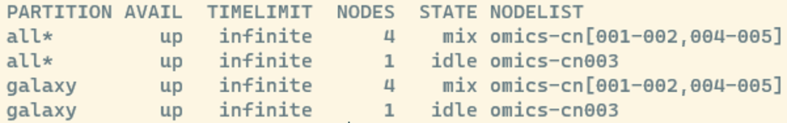
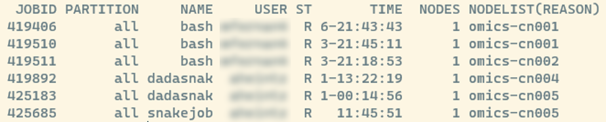
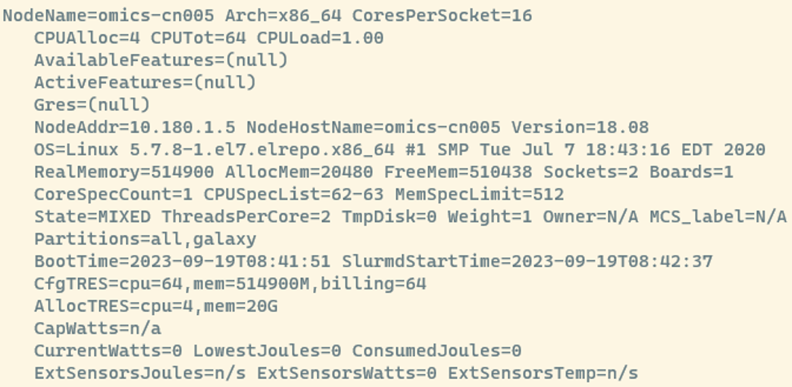
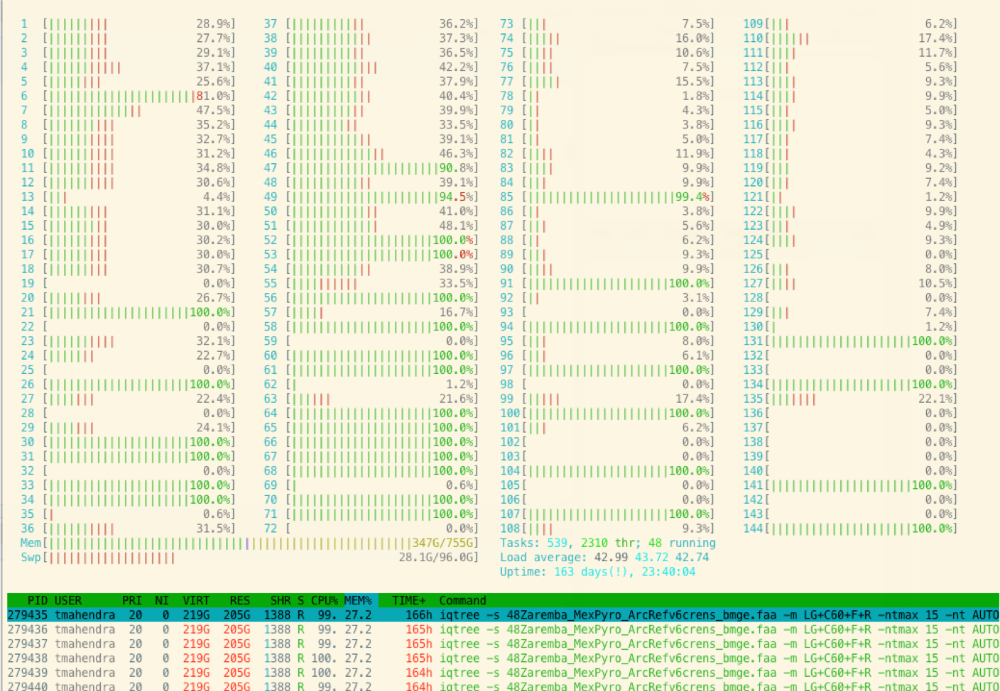
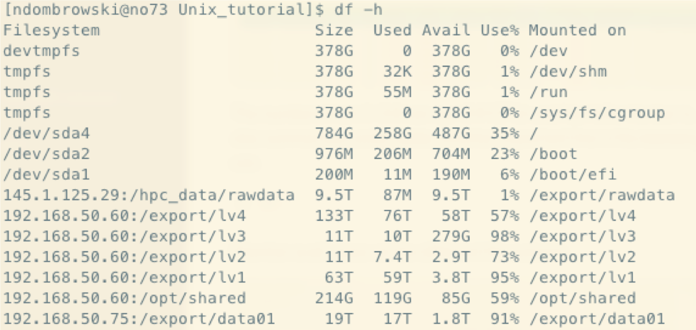
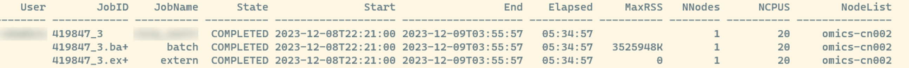

ssh username@serverStart working on an HPC
Tip
New to HPCs? The Getting started with bash and an HPC tutorial explains step by step how to log in to Crunchomics, copy your data there and run your first jobs. This page is a reference: it lists the key commands with short examples. For how an HPC works and the Crunchomics etiquette, see Using an HPC.
In the commands on this page, replace uvanetid with your own UvAnetID. On Crunchomics itself, you can use $USER instead: this variable holds your user name.
Quick reference
| Command | What it does | Example |
|---|---|---|
ssh |
Log in to a server | ssh uvanetid@omics-h0.science.uva.nl |
scp |
Copy files to or from a server | scp -r data uvanetid@server:/path |
rsync |
Copy or synchronize files, only sends what changed | rsync -av data/ uvanetid@server:/path/data/ |
sinfo |
Show the nodes and their state | sinfo |
squeue |
Show the jobs in the queue | squeue -u $USER |
scontrol |
Show details about nodes or jobs | scontrol show node omics-cn001 |
htop |
Show how busy the node you are on is | htop |
df, du |
Show free disk space, or the size of a folder | du -sh personal/ |
srun |
Run a command on a compute node, interactively | srun --cpus-per-task=1 --mem=1G --time=00:10:00 hostname |
sbatch |
Submit a job script to the queue | sbatch scripts/job.sh |
scancel |
Cancel one of your jobs | scancel 379723 |
sacct |
Show the resources a job used | sacct -j 379723 |
Connecting to a server
SSH (Secure Shell) is a way for two computers to connect to each other securely. The general command looks like this:
usernameis your account name on the HPC. For Crunchomics, this is your UvAnetIDserveris the address of the HPC. For Crunchomics, this isomics-h0.science.uva.nl
# Log in to Crunchomics
ssh uvanetid@omics-h0.science.uva.nlYou are then asked for your UvA password. Nothing appears on the screen while you type your password, this is normal. After you log in, the prompt shows your UvAnetID and omics-h0. Every command you type now runs on Crunchomics, not on your own computer. Type exit to log out.
Important
- If you log in from the UvA, use the eduroam network, not the open Amsterdam Science Park network
- If you log in from outside the UvA, you must be connected to the VPN. Contact ICT if you have not set it up or have trouble with it
Some programs on the HPC can open a window, for example to show a plot or a PDF. To see such windows on your own computer, log in with the -X option. -X enables X11 forwarding: the HPC sends the graphical output to your computer.
ssh -X uvanetid@omics-h0.science.uva.nlSetup for first time Crunchomics users
If this is your first time using Crunchomics, run a small bash script to set up your account. The script:
- Adds
/zfs/omics/software/binto your PATH. The PATH is the list of folders in which bash looks for programs. With this change, bash can find the software that is already installed on Crunchomics - Sets up a Python 3 environment with some useful Python packages
- Creates a link called
personalin your home directory. This link leads to your personal directory, which has 500 GB of space. Your home directory itself only has 25 GB
# Run the Crunchomics installation script
/zfs/omics/software/script/omics_install_script
# Check: you should now see the personal link in your home directory
ls -lh ~The output contains a line like personal -> /zfs/omics/personal/uvanetid. The arrow shows that personal is a link (also called a symbolic link or symlink): a shortcut that points to another folder. Always make your project folders inside personal, since it has much more space than your home directory.
Transferring files
scp: Transferring data from/to a server
scp (Secure Copy Protocol) copies files and folders between your computer and a server. The basic syntax is:
scp [options] SOURCE DESTINATION- A location on a server is written as
username@server:path_on_the_server
Important
Run scp in a terminal on your own computer, not in a terminal that is logged in to the HPC. It helps to have two terminals open: one on your own computer and one on the HPC. In MobaXterm, open a second tab with the + button.
# Copy a file from your computer to your personal folder on Crunchomics
scp file.txt uvanetid@omics-h0.science.uva.nl:/home/uvanetid/personal/
# Copy a folder and everything inside it (-r = recursive)
scp -r data uvanetid@omics-h0.science.uva.nl:/home/uvanetid/personal/
# Copy a file from Crunchomics into the current folder on your computer (.)
scp uvanetid@omics-h0.science.uva.nl:/home/uvanetid/personal/file.txt .As with ssh, you are asked for your UvA password. Afterwards, check on the HPC that the files arrived, e.g. with ls -l.
There are also file transfer programs with a graphical interface, e.g. FileZilla.
For a worked example of using scp to copy data to a real remote server, see Using the IBED Tape Archive.
rsync: Synchronizing files and folders
rsync also copies files between computers, but it only sends what is new or changed. This is useful for large datasets (imagine having to move several terabytes), for transfers that were interrupted, and for updating a copy without transferring everything again. It also works between two folders on the same computer.
# Copy a file from your computer to Crunchomics
rsync -avz file.txt uvanetid@omics-h0.science.uva.nl:/home/uvanetid/personal/
# Copy a file from Crunchomics into the current folder on your computer
rsync -avz uvanetid@omics-h0.science.uva.nl:/home/uvanetid/personal/file.txt .-a: archive mode, keeps access rights, dates and other attributes, and copies folders recursively-v: verbose, prints the files being copied-z: compresses the data during the transfer
Important
For folders, a slash at the end of the source path changes what is copied:
rsync -av data/ target/copies the content ofdataintotargetrsync -av data target/copies the folderdataitself, so you gettarget/data
For more examples, check out this page.
Checking the cluster
sinfo: Information about the nodes
sinfo shows which nodes the cluster has and how busy they are:
sinfoThe output looks something like this:

- PARTITION: the queues that are available
- STATE: how busy a node is
- idle: all CPUs and memory are free
- mix: part of the CPUs and memory are reserved by jobs
- alloc: all CPUs and memory are reserved by jobs
- drain: not available, set by the system administrators (e.g. for maintenance)
- down: not available
- NODES: the number of nodes
- NODELIST: the names of the nodes, here omics-cn001 to omics-cn005
squeue: View the jobs in the queue
squeue shows which jobs are running or waiting in the queue:
# Show all jobs on the cluster
squeue
# Show only your own jobs
squeue -u $USERThe output of squeue looks something like this:

- JOBID: a unique number for each job. You use it to check on or cancel a job
- ST: the current state of the job, e.g. R = running, PD = pending (waiting). The full list of state codes can be found here
scontrol: Resources of a node
To see how many resources a compute node has, and how many are in use:
# Show all nodes
scontrol show node
# Show one node
scontrol show node omics-cn005
This is a lot of information but here are some useful things to look at:
- NodeName=omics-cn005: This is the name of the node you’re inspecting. Each node has a unique name for identification.
- CPUAlloc=4 CPUTot=64 CPULoad=1.00:
- CPUAlloc=4: Currently, 4 CPUs are reserved by jobs.
- CPUTot=64: The total number of CPUs available on this node is 64.
- CPULoad=1.00: The CPU load gives you an idea of how busy the CPUs are. It is roughly the number of CPUs that are busy, so a load of 1.00 on a node with 64 CPUs means that about one CPU is busy.
- RealMemory=514900 AllocMem=20480 FreeMem=510438:
- RealMemory=514900: The total physical memory (RAM) on this node is 514900 megabytes or 512 GB.
- AllocMem=20480: Currently, 20 gigabytes of memory are reserved by jobs.
- FreeMem=510438: There are 510438 megabytes of free memory available.
- AllocTRES=cpu=4,mem=20G:
- AllocTRES shows the resources that are currently reserved: 4 CPUs and 20 gigabytes of memory.
In short: compare CPUAlloc with CPUTot to see how many CPUs are still free, and AllocMem with RealMemory for the memory.
htop: How busy is a node
htop shows how busy the node you are on is. Typing htop gives a screen that looks something like this:

The numbers from 1-64 are the 64 CPUs available on the Crunchomics login node. The fuller a bar is, the more of that CPU is in use. This is also summarized under tasks. The memory line shows how much of the total memory is in use.
You exit the htop window by typing q.
htop only shows the node you are logged in to. On the login node, it shows the login node, not the compute nodes.
df: Free disk space
df shows the size and free space of the different file systems. The list can be long, but it quickly lets you check how much space is left on the folders you work in:
# -h prints the sizes in a human-readable format (K, M, G, T)
df -h

du: Checking the size of a folder
du shows how much space a folder takes up. For a large folder with many files, this can take a while.
# Total size of the personal folder (-s = summary, -h = human-readable)
du -sh personal/
# Size of each file and folder inside the personal folder
du -sh personal/*Submitting a job
The analyses run on the compute nodes, as jobs. You send a job to SLURM with srun or sbatch, together with the resources it needs:
| Option | Meaning |
|---|---|
--ntasks=1 |
Run the command once. A task is one copy of your command. Without this option, SLURM can start more than one copy |
--cpus-per-task=2 |
Request 2 CPUs for that task |
--mem=5G |
Request 5 GB of memory in total for the job |
--mem-per-cpu=5G |
Request 5 GB of memory for each CPU (use either --mem or --mem-per-cpu) |
--time=01:00:00 |
Maximum run time (hours:minutes:seconds). If the job takes longer, SLURM stops it |
srun: Submitting a job interactively
Use srun when:
- You want to see the output directly on your screen
- You are testing or debugging your commands before you write a job script
- You have short jobs (usually less than an hour)
srun --ntasks=1 --cpus-per-task=1 --mem=1G --time=00:10:00 echo "Hello interactively"Everything between srun and the actual command (echo "Hello interactively") tells SLURM which resources your job needs.
If the compute nodes are busy, your job waits in the queue. srun then prints srun: job 387583 queued and waiting for resources, and the prompt does not come back until the job has run. Don’t press Ctrl+C, because that cancels your job.
Important
Jobs started with srun stop if you lose the connection to the HPC, for example when you close your laptop. For longer jobs, use sbatch, or run srun inside screen.
Working on a compute node interactively
With --pty bash -i, srun opens a bash shell on a compute node. Every command you type then runs on the compute node, with the resources you requested:
# Open an interactive bash shell on a compute node for at most 1 hour
srun --ntasks=1 --cpus-per-task=1 --mem=5G --time=01:00:00 --pty bash -i
# Check where you are: this prints the name of the compute node
hostname
# Go back to the login node when you are done
exitAlways exit an interactive session when you are done. As long as the session is open, the CPUs and memory you requested stay reserved for you, and other people have to wait for them.
sbatch: Submitting a job script
Use sbatch when:
- You have long-running or resource-intensive jobs
- You want jobs to run without you watching them, also after you log out
- You want to submit several jobs at once
To run a job with sbatch, you write a job script: a bash script with your commands and, at the top, the resources the job needs. For example, scripts/first_job.sh:
#!/bin/bash
#SBATCH --job-name=first_job
#SBATCH --output=logs/first_job_%j.out
#SBATCH --error=logs/first_job_%j.err
#SBATCH --ntasks=1
#SBATCH --cpus-per-task=2
#SBATCH --mem=2G
#SBATCH --time=00:10:00
echo "Job started on:"
date
# Your commands go here
echo "Today we are using slurm"
echo "Job finished on:"
date#!/bin/bash: the shebang line tells the system to run the script with bash. Add it at the very top of every job script#SBATCH --...: these lines tell SLURM which resources the job needs and how to name things. For bash they are comments, only SLURM reads them. They are the same options that you use withsrun, plus:--job-name: a name for your job, which you see insqueue--output: the file in which SLURM stores everything the job prints to the screen (the standard output)--error: the file in which SLURM stores error messages (the standard error)%jin the file names is replaced by the job ID, so every job gets its own log files
echoanddate: print messages with the time, so that you can follow the progress of the job in the log file
Without --output and --error, SLURM writes both into a file called slurm-JOBID.out in the folder from which you submitted the job.
# Make the logs folder first: SLURM does not create it, and the job fails without it
mkdir -p logs
# Submit the job script
sbatch scripts/first_job.sh
# Check the job: it is in the queue while it waits or runs
squeue -u $USER
# After the job finished, look at its log files
ls -l logs
cat logs/first_job_*.outThe log files are the first place to look when something goes wrong. Error messages and warnings are often recorded there.
scancel: Cancelling a job
If a job is stuck or uses the wrong resources, cancel it with its job ID (see squeue -u $USER):
scancel 379723scancel only works on your own jobs.
Choosing the right amount of resources
The resources a job needs vary a lot between tools and datasets. Some rules of thumb:
- Start small: a lot of tools don’t need huge resources, especially for small test runs
- Check the tool’s documentation: some tools recommend resource settings
- Test with a small dataset first: a subset of your data runs faster and helps you find and fix problems
- Be careful with how memory is counted:
--mem=4Gasks for 4 GB in total for your job, no matter how many CPUs you request.--mem-per-cpu=4Ginstead asks for 4 GB for each CPU, so--cpus-per-task=4 --mem-per-cpu=4Ggives you a total of 16 GB of memory (4 CPUs * 4 GB) - Adjust step by step: if your job fails or runs out of memory or time, increase the resources gradually
Requesting more resources than you need makes your jobs wait longer in the queue and can block others from running.
sacct: Checking what a job used
After a job has finished, sacct shows which resources it actually used:
sacct -j 419847 --format=User,JobID,Jobname,state,start,end,elapsed,MaxRss,nnodes,ncpus,nodelist
-j 419847: show the information for job 419847--format=...: choose which columns to show. The most useful ones are:State: whether the job finished successfully (COMPLETED) or not (e.g. FAILED, CANCELLED, TIMEOUT)Elapsed: how long the job ranMaxRSS: the maximum amount of memory the job used. K stands for kilobytes, so 3525948K is about 3.5 GB. Compare this with the memory you requested
- One job can have several lines. The first line is the job as a whole, the other lines are job steps. The
.batchline is your job script and shows the memory your commands used
If you run similar jobs over and over again, use this to adjust your requests.
Arrays: Running the same job for many samples
In bioinformatics it is very common to run the same command on several input files. Instead of copy pasting the same command several times, you can write the command once and use a SLURM job array to run it in parallel for each file.
Assume we have three samples and for each sample we have generated a file with sequencing data:
- sample1.fastq.gz
- sample2.fastq.gz
- sample3.fastq.gz
We want to remove adapters from all three files. First, we make a text file, sample_list.txt, that lists the samples, one per line (e.g. with nano):
sample1
sample2
sample3# Check the sample list: we expect 3 lines
cat sample_list.txt
wc -l sample_list.txtWe then write a job script, scripts/porechop_array.sh:
#!/bin/bash
#SBATCH --job-name=porechop_array
#SBATCH --output=logs/porechop_%A_%a.out
#SBATCH --error=logs/porechop_%A_%a.err
#SBATCH --array=1-3%2
#SBATCH --ntasks=1
#SBATCH --cpus-per-task=4
#SBATCH --mem=10G
#SBATCH --time=02:00:00
#SBATCH --mail-type=END,FAIL
#SBATCH --mail-user=uvanetid@uva.nl
# SLURM_ARRAY_TASK_ID is set by SLURM: 1 for the first job in the array, 2 for the second, and so on
# sed -n "2p" prints line 2 of the file, so each job picks its own sample
sample=$(sed -n "${SLURM_ARRAY_TASK_ID}p" sample_list.txt)
echo "Now job ${SLURM_ARRAY_TASK_ID} runs on ${sample}"
porechop --input ${sample}.fastq.gz \
--output results/porechop/${sample}_filtered.fastq.gz \
--threads $SLURM_CPUS_PER_TASK \
--discard_middleThe #SBATCH options:
--outputand--error:%Ais replaced by the job ID that SLURM assigns, and%aby the number of the job in the array. You get log files such aslogs/porechop_123456_1.out--array=1-3%2: run 3 jobs, numbered 1 to 3, one for each line insample_list.txt.%2means that at most 2 jobs run at the same time. SLURM starts the next one when one has finished. Use this for jobs that need a lot of CPUs or memory, and try to use no more than ~20% of Crunchomics at the same time--cpus-per-task,--memand--timeapply to each job in the array. So every sample gets 4 CPUs, 10 GB of memory and up to 2 hours--mail-typeand--mail-user: send an email when a job ends or fails
In the job:
SLURM_ARRAY_TASK_IDis a variable that SLURM sets in each job of the array. It holds the number of the current job: 1, 2 or 3. We don’t create this variable ourselves, we only use itsed -n "${SLURM_ARRAY_TASK_ID}p" sample_list.txtprints the line with that number. So job 1 works on sample1, job 2 on sample2, and so on$SLURM_CPUS_PER_TASKholds the number of CPUs from--cpus-per-task, so porechop uses exactly the CPUs you requested
Before you submit the script, test the line selection on the login node. SLURM_ARRAY_TASK_ID only exists inside an array job, so put a number in its place:
# We expect sample2
sed -n "2p" sample_list.txtThen submit the array:
# Make the folders for the logs and the output first
mkdir -p logs results/porechop
sbatch scripts/porechop_array.sh
# You see one line per job, with the array number after an underscore, e.g. 123456_1
squeue -u $USER
# After the jobs finished: we expect 3 output files
ls -l results/porechop